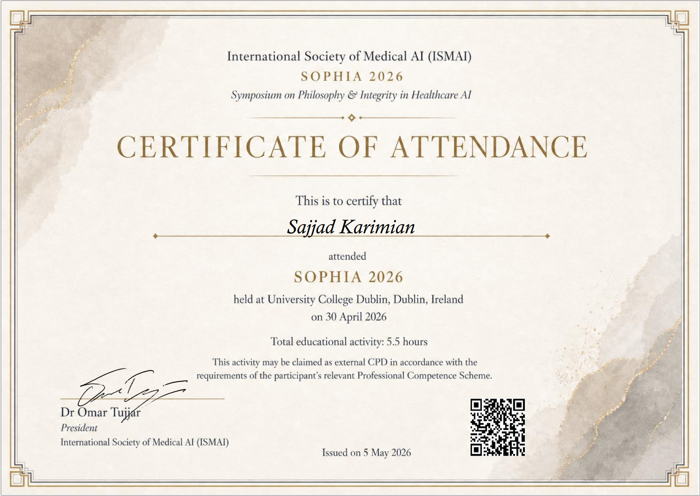

IBM
A path from hospital IT and server infrastructure to clinical data analysis, healthcare AI research, and responsible AI governance.
Supporting healthcare innovation and digital health research within the VICTORY project. Contributing to stakeholder engagement, evidence synthesis, and healthcare-focused analytical workflows. Translating healthcare and research requirements into structured digital solutions across multidisciplinary academic and healthcare teams.
Contributing to healthcare AI innovation and inclusive design research within the ID4AI project. Supporting analytical and governance-related activities for healthcare data and AI systems. Working within interdisciplinary teams spanning healthcare, technology, and research domains, with a focus on AI adoption and human-centred design.
Designed healthcare data governance and data quality frameworks for clinical AI and healthcare analytics systems. Conducted evidence synthesis and healthcare data analysis using SQL, Python, and research methodologies. Supported transparency, FAIR data, and interoperability initiatives within healthcare-focused projects. Produced stakeholder-ready reports, analytical outputs, and governance documentation.
Supported undergraduate teaching and practical lab sessions across computer science modules. Guided students through coursework, assessments, and technical problem-solving in programming and data-related subjects.
Evaluated healthcare data collection, quality management, and reporting practices across a major acute hospital. Identified data quality gaps, documented reporting standards, and produced structured analytical outputs for clinical and senior operational stakeholders. Applied healthcare informatics methods to assess data transparency and accountability across a complex clinical environment.
↳ This placement confirmed what I had observed from the IT side: the data problems in healthcare are rarely technical — they are human, organisational, and systemic.
Provided IT support and systems administration within a clinical hospital environment. Working directly in a hospital setting made the gap between technical infrastructure and clinical realities visible — the moment that shaped my move into Medical Informatics and research.
Seven years managing Linux server infrastructure (Debian), web services, email systems, and security configurations. Coordinated with frontend and backend developers on server-side architecture and deployment. This hands-on technical grounding — understanding how systems are actually built and where they break — now informs how I analyse and evaluate digital systems in healthcare and AI contexts.
Based on practical use in research, clinical analysis, and applied projects.
Selected certificates, training, and workshops. Click each card to view the certificate.


